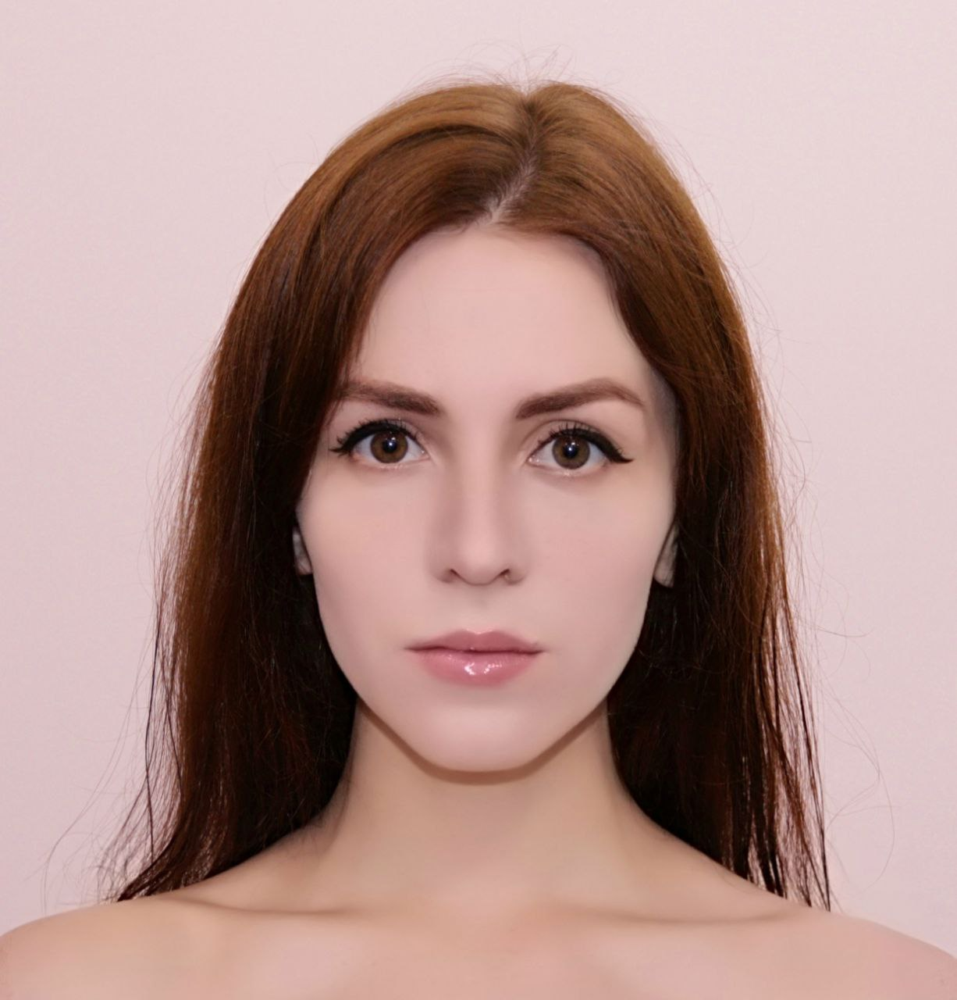

Yeva Shaludzeshava
RSSchool
JavaScript Student
RSSchool
JavaScript Student
| Contacts | About me | My Photo |
|---|---|---|
|
Bringing forth a motivated attitude and a variety of powerful skills. |  |
JavaScript Student
RSSchool, June 2024 - Present
Learn to use JavaScript, HTML, and CSS.
Expected graduation: October 2024